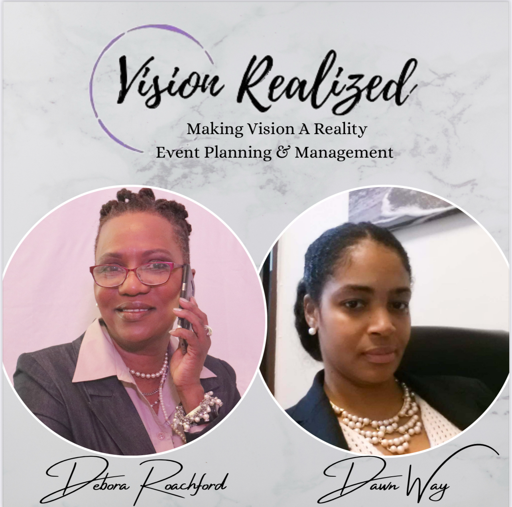

About Vision Realized
Vision Realized LLC is a full-service event planning company based in Newark, New Jersey. Founded by Debora Roachford and Dawn Way, we specialize in turning our clients' ideas into unforgettable experiences.
Whether it's a corporate conference, a milestone birthday, a fundraising gala, or a community event — our team handles every detail so you can be fully present.
Our event planning company grew organically from hands-on experience and a shared passion for creating memorable events. Originally founded in November 2019 under a different name, the business began when Debora and her partners were recognized for their ability to transform event spaces during their work with a venue connected to the Newark International Film Festival. After being invited to manage events professionally, they launched their company and quickly began organizing multiple events.
Despite challenges during the COVID-19 pandemic and a restructuring of the partnership, Debora and Dawn continued to build the business, rebranding as Vision Realized in 2023 while maintaining their original foundation. The company is known for producing a select number of thoughtfully curated events each year, emphasizing quality, creativity, and collaboration.
From themed experiences, corporate networking events, to community initiatives such as the Black History crawl, Vision Realized focuses on impactful, detail-driven events and strong partnerships with other local businesses.
Our Mission
To make professional event planning accessible to everyone. Every event, big or small, deserves the same dedication and attention to detail.
Why Us
We're not just planners — we're your partners. From the first phone call to the last guest leaving, we make sure everything runs smoothly.

Meet the Founders
Debora Roachford
Co-Founder & Lead Event Planner
Debora is a visionary leader and co-founder of Vision Realized Events, whose passion for organization and service has shaped her journey into the event planning industry. A mother of two and grandmother of three, she brings both personal warmth and professional dedication to her work. Originally from Panama, Debora relocated to the United States as a teenager, where she completed her education and became deeply involved in her church and local community. Her early experiences laid the foundation for her signature creativity, attention to detail, and ability to bring people together. Her professional path in event planning expanded through her involvement with the Newark International Film Festival, where she contributed as part of the event planning team. In 2019, she co-founded an event planning business, originally named A Favor For You, which later evolved into Vision Realized LLC. In addition to her entrepreneurial work, Debora has dedicated her time to community service as a bilingual interpreter for a women’s shelter and the Princeton Breast Cancer Resource Center, supporting women through her language skills as a breast and thyroid cancer survivor herself. Debora exemplifies resilience, strength, and purpose. Her approach to event planning is rooted in meaningful connection, cultural awareness, and community impact. Known for her creativity, compassion, and unwavering commitment to excellence, Debora continues to design experiences that not only meet client expectations but also leave a lasting impression on the communities she serves.
Dawn Way
Co-Founder & Lead Event Planner
Dawn is one of the visionaries behind Vision Realized Events. With over 20 years of comprehensive event planning and management experience, Dawn has dedicated her career to creating meaningful experiences for social, corporate, and nonprofit organizations. Her expertise spans strategic event development, stakeholder engagement, and flawless program execution across diverse industry sectors. Throughout her career, Dawn has orchestrated countless events, from intimate corporate gatherings to large-scale galas and community initiatives. Her commitment to excellence and attention to detail have made her a trusted partner for organizations seeking impactful, purpose-driven events. Dawn's approach centers on understanding each client's unique mission and vision, ensuring every event authentically reflects their values and objectives. Known by colleagues and clients as organized, strategic, and passionate about bringing people together for meaningful causes, Dawn's professional acumen and dedication to excellence have positioned her as a leading authority in the events industry. She consistently delivers measurable outcomes that create lasting impact for clients and communities alike, making every vision a realized success.